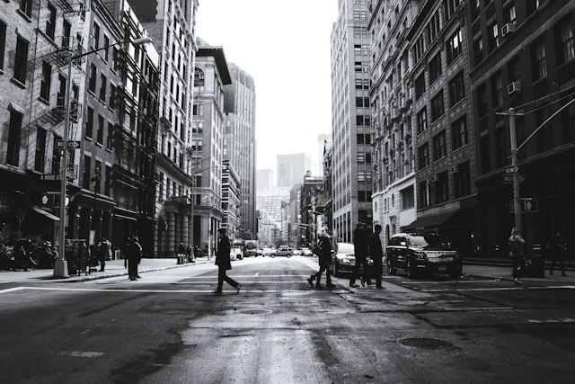

ONE IMAGE · TWO COORDINATE SYSTEMS
从照片到频域：看见滤波器在做什么
把同一张照片放进四个“窗口”：处理后的空间图像、它的频谱、频域滤波器，以及逆变换得到的结果。拖动控制项，观察哪些变化被保留，哪些变化被抹掉。
空间域 I(x,y)每个位置的亮度；边缘是亮度快速变化的地方。
频率域 F(u,v)每个方向、每个变化速率的强度；不是像素坐标。
滤波器 H(u,v)对频率分量逐点乘法：保留、削弱或翻转相位。
逆变换 g(x,y)把改过的频率重新合成为一张空间图像。

原始照片（高分辨率素材）640 × 427 RGB → 64 × 64 灰度采样 → 进入二维 Fourier transform
输入图像 Ip(x,y)
处理后，真正送入 FFT 的图像64 × 64这是空间域处理后的输入，不是逆变换结果；它会被转换到频率坐标。
幅度谱 |Fp(u,v)|
fftshift 后，低频在中心对数亮度中心亮点代表整体明暗的慢变化；离中心越远，代表越快的空间变化。
频域滤波器 H(u,v)
每个频率位置都乘一个权重低通蓝色区域接近 1，会被保留；外圈接近 0，会被削弱。
逆变换结果 g(x,y)
Fp · H → Fg → IFFT输出这是 IFFT 从 Fp · H 重建出的输出，不会直接等于上面的输入图像。
输入 Ip(x,y)→FFT：Fp(u,v)→乘 H(u,v)→IFFT：g(x,y)
别把坐标混在一起：原图里的 (x,y) 是“哪里”；频谱里的 (u,v) 是“变化有多快、朝哪个方向”。频谱中心是低频，不是原照片的中心像素。
频谱白：低频 / 慢变化频谱黑：高频 / 边缘H 白：保留H 黑：抑制